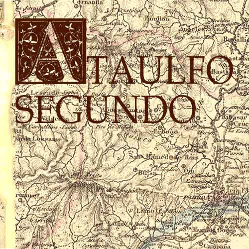
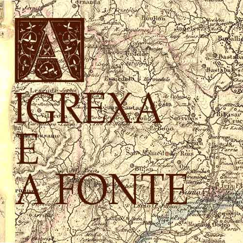
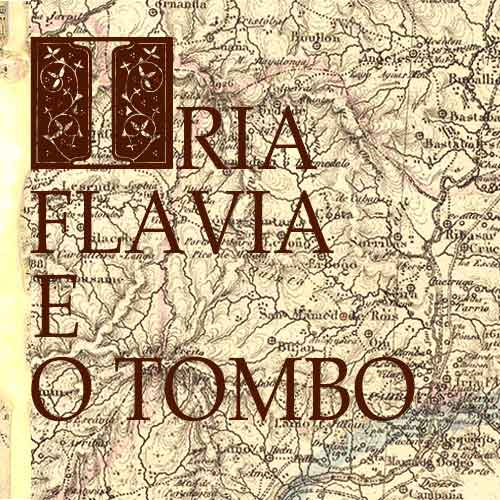
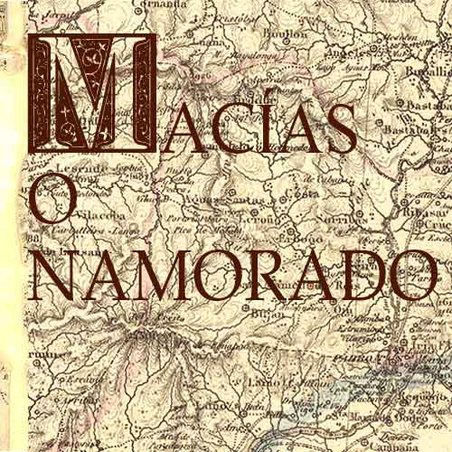
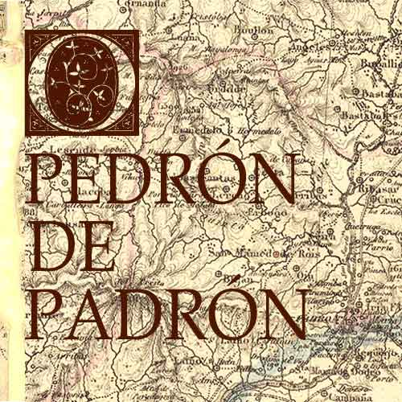
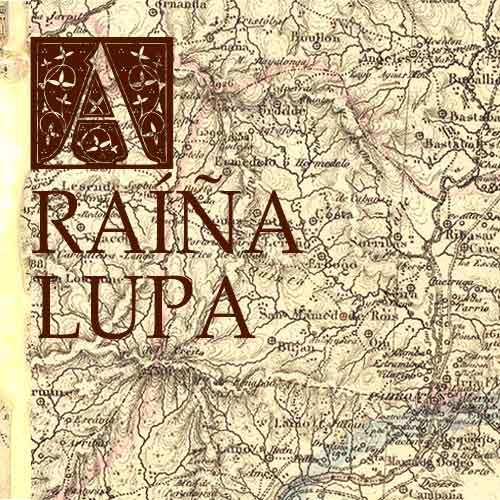

|  Ataulfo Segundo |  A igrexa e a fonte |  Iria Flavia e o tombo |  Macías O Namorado |  O Pedrón de Padrón |
|  A raíña Lupa |
Ataulfo Segundo
Adulfo II, ou Ataulfo, foi bispo de Iria-Compostela entre os anos 855 e 876, cando o sepulcro apostólico facía ben pouco que fora descuberto por Teodomiro e a incipiente Compostela aínda carecía de recoñecemento formal respecto de Iria Flavia, pois esta era a sede oficial e aquela só a residencia obispal.
Eran tempos en que se sucedían, con grave perigo, os ataques normandos que, entrando pola ría de Arousa e o río Ulla, chegaban até Iria e atacábana en busca de todo o botín material e humano que puidesen lograr, deixando a Iria nunha situación moi precaria e obrigando ao clero e á poboación a fuxir ao Locus Sancti Iacobi e o seu primeiro núcleo urbano, máis seguro e defendible que a veiga iriense. Algunhas das incursións normandas pretenderon chegar até a aínda nacente Compostela para roubar como botín os restos apostólicos e pedir alto rescate por eles. A intervención do Conde Pedro resultou fundamental, salvando a Santiago da ameaza, vencendo ao invasor e disuadíndolle no futuro deste obxectivo.
É entón cando o bispo de Iria Adulfo ou Ataulfo II, fixo a Roma a solicitude de trasladar a sede por razóns de seguridade, ao que o papa Nicolás I accedeu, aínda que a condición de que Iria mantivese a condición de cátedra ou sede oficial sobre Compostela. É a partir deste momento que xorde, para os bispos de Iria, o nomeamento de Bispo de Iria e da Sede Apostólica, que logo xerará tensións entre Roma e Compostela.
Os costumes por aqueles tempos non eran precisamente exemplares, nin o ámbito monástico nin no laico, e as incursións normandas e as razias árabes favorecían un ámbito que propiciaban os desordenes, desenfreos e abusos nos costumes, con escándalos, concubinatos, vendas simoníacas e todo tipo de desordenes. O bo bispo Adulfo II propúxose acabar con estes desequilibrios e recuperar, mesmo con man dura, a disciplina eclesiástica. Tal actitude contrarió en extremo os intereses de cantos gozaban de tales alborotos, polo que ao bispo Adulfo xurdíronlle inimigos que buscaron o seu perdición ante o monarca Alfonso III. Foi acusado do abominable crime da sodomía, e subornouse aos servos do propio bispo, Zadan, Cadón e Acipilón quen, probablemente resentidos pola austeridade reinstauradora do prelado que lles facía perder as súas prerrogativas e prebendas, prestáronse a acusar ao seu bispo ante o rei, de tratos traidores cos mouros.Con tan malas artes e perversa e desleal estratexia convenceuse ao rei das súas culpas, que o apresou, e ante as alegacións de inocencia do bispo, resolveu someter o caso ao “Xuízo de Deus”.
O acusado debería comparecer ante un touro bravo como modo de dirimir a súa culpabilidade ou inocencia. Asumiu Adulfo a proba con submisión, celebrando antes a Eucaristía e presentándose logo ante o hastado co seu vestiario obispal e os seus ornamentos sacros. Solto o morlaco e azuzado por cans, arremeteu a fera en primeira intención, pero ao chegar ante o servo de Deus coa súa mirada e o seu pensamento postos na xustiza divina, frea a súa envestida, depón toda a súa cólera e inclina a súa testuz con mansedumbre, deixando que o bispo collese os seus cornos coas súas mans, mentres os asistentes prorrumpían en aclamacións de admiración ante a inconfundible proba da súa inocencia. O milagre lendario foi recollido nun romance da Crónica Xeral de Alfonso X.
Fonte: albertosolana.wordpress.com
A igrexa e a fonte
En 1852 edifícase o santuario, unha elevada construción en pedra de sillería sobre un xa elevado atrio. O acceso é mediante unha adiantada e rechamante escalinata de dúas entradas, encima de la Fuente Santa de dous caños.
Cando no século XVI estaban nunha talla de árbores, o párroco de Cruces Juan Pérez Mondragón está a piques de ser esmagado por un castiñeiro que sobre el se esborrallaba. Ao ver vir o castiñeiro presente que a súa morte se achega, no momento reza unha pregaria á Virxe e milagrosamente non sofre grandes danos e logra salvar a vida. O piadoso sacerdote decide en 1582 como agradecemento á virxe salvadora construír unha fonte nese mesmo lugar, á que engade unha imaxe en pedra da Virxe María. Fonte que hoxe podemos ver á dereita da estrada xeral, debaixo das escaleiras de entrada ao Santuario.
Segundo a tradición en 1762, un labrador do Salnés, entre as rías de Arousa e Pontevedra, enfermo de hidropesía é conducido nun carro de bueyes ao Hospital de Santiago, entón o único na zona. Ao pasar por diante da fonte pídelle á súa esposa auga e solicita á Virxe a súa curación. Despois de beber sente un repentino alivio e o enfermo decide permanecer alí tres días, sitio onde está a fonte, bebendo ata que se produce a curación. Como recoñecemento reza á Virxe, Bendita sexas por librarme da escravitude da miña enfermidade. Antes de partir deixa o carro e os bueyes como primeira esmola que chegou para a construción dunha pequena igrexa que gardou a imaxe da virxe. A fonte é coñecida desde entón como a Fonte Santa.
En 1852 edifícase o santuario, unha elevada construción en pedra de sillería sobre un xa elevado atrio. O acceso é mediante unha adiantada e rechamante escalinata de dúas entradas, encima de la Fuente Santa de dous caños. A escalinata serviu de modelo para a construída na baixada á estación de Santiago de Compostela e foi reproducida no Pobo Español de Barcelona. Desde alí hai unha boa vista sobre o amplo e verde val da Maía.
Dúas airosas torres:
Na esvelta fachada do santuario destacan as dúas airosas torres de 32,5 metros de altura, unha construída o ano 1885 en estilo barroco, a outra posterior. O primeiro corpo é liso, de moita altura, o segundo ocúpano as campás e o terceiro é unha delgada cúpula redonda con balconada ao redor. A parte central da fachada, moi equilibrada, serve de unión entre as torres. Portada cadrada de estilo barroco adornada a ambos os dous lados, no friso unha hornacina barroca coa imaxe da Virxe da Escravitude, encima un reloxo e no frontón unha cruz.
Fonte: www.mundiario.com
Iria Flavia e o tombo
Iria Flavia é hoxe o nome dunha pequena localidade veciña á famosa vila de Padrón. Porén, o seu peso histórico é enorme e a súa relación co nacemento de Compostela é incuestionable.
A súa fundación seguramente está relacionada co emperador Tito Flavius Vespasiano, que converteu este enclave nunha villae romana e porto comercial. As lendas locais atribúenlle ao propio Apóstolo Santiago a predicación nesta vila e nos seus contornos, concretamente no veciño cotarelo que leva o seu nome: Santiaguiño do Monte. A este mesmo lugar será traído o seu corpo, anos máis tarde, tras o seu martirio en Xerusalén, nunha viaxe-odisea a través do Mediterráneo e das costas do actual Portugal. Algunhas lendas contan que o seu corpo permaneceu en Iria durante un período breve de tempo para ser levado á súa actual localización en Compostela.
Coa oficialización do cristianismo, Iria converteuse en sé bispal. Aínda que hai moi poucos datos sobre estes primeiros séculos, a partir do século VI xa temos máis noticias. Aparecen moitos nomes de bispos de Iria, como Andrés no Concilio de Braga (561), Lugo (569) e II de Braga (572); Domingo no III Concilio de Toledo (589); Samuel, no IV Concilio de Toledo en 633; Gotomaro, Leonesindo (...709...); Augustino, nos tempos de Fruela I (757-68); Vaula, nos tempos de Mauregato (783-788); ata chegar ao gran Teodomiro, descubridor da tumba do Apóstolo (813). Finalmente, Adulfo II (855) foi o bispo que trasladou a sé episcopal a Compostela, aínda que a capital seguiu sendo Iria. Existe, ademais, unha relación doutros 28 bispos enterrados en Iria, que chegaron procedentes de toda a Península escapando das invasións árabes do ano 711. No século XII, o arcebispo de Santiago, don Diego de Xelmírez, dá testemuño destes bispos relatando que o papa Calisto considerou a igrexa de Iria como segunda sé por se atoparen aquí "os 28 santos corpos".
Iria Flavia foi quizais a única Igrexa de Hispania que mantivo a sucesión episcopal durante a invasión musulmá a pesar das continuas arremetidas. Entre tantas tumbas e enterramentos sacros, hai unha de especial devoción para toda a comarca. Esta tumba, situada á dereita do altar maior, no corredor da sancristía, é a orixe desta historia tan curiosa. Trátase do sepulcro do Bispo Santo. O nome deste bispo non o coñecemos, pero é distinguido por todos como "O Corpo Santo". Din que o seu corpo foi atopado incorrupto en 1675, sendo este fenómeno estraño, seguramente, a orixe dunha gran devoción. Axiña se lle atribuíron numerosos milagres e, cos anos, tamén collerá sona de ter a facultade de desendemoñar a bebés acabados de nacer. A crenza moi arraigada de que as causas dos problemas de moitos bebés que nacían con dificultades, choraban moito ou non comían ben puidese ter a súa orixe en feitizos ou nun mal de ollo levou moitas nais a acudiren ao santo para remediar o problema e sandar os seus cativos. Ao rito de desenfeitizar un bebé denominóuselle "o Tombo".
Unha vez "certificado" o meigallo no bebé, procedíase a resolver o mal. O rito consistía en ir ao templo e poñer o neno enriba da lápida do "Corpo Santo", sobre a que previamente se colocara un pano branco. Dábaselle un tombo ou unha volta completa ao bebé sobre o pano para que o feitizo quedase impregnado no tecido. Logo recollíase o pano e a roupa do bebé, que se levaba decontado ao río máis próximo. Dise que se limpaban estes panos baixo 7 pontes ou 7 fontes e santo remedio! A auga levaba a miseria contraída e o neno sandaba. Outro remedio parecido e moi estendido na zona, se ben era un pouco máis aparatoso, consistía en levar o anxiño "endemoñado" ao forno do panadeiro. Alí colocábase o neniño sobre a pa do pan e introducíase brevemente no forno candente. Este proceso tiña o mesmo efecto antimeigallo que se describiu anteriormente. Dándolle unha pequena cocción extra, o neno sandaba. Cabe preguntarse a quen lle faltaba unha fervura neste caso: ao neno, ao panadeiro ou aos pais por consentiren tostalo.
Fonte: Libro Lendas e tradicións do Caminho Portugués.
Macías O Namorado
Macías, chamado o Namorado, era oriúndo de Padrón. Foi un mancebo ao servizo do marqués Enrique de Villena, mestre da Orde de Calatrava. Esta é unha historia de amor que comeza seguramente á beira do río Ulla. Unha fermosa dama da corte da marquesa de Villena, chamada Elvira, cae do seu cabalo nas augas do río e é rescatada por un mozo que pasaba por alí, Macías.
Contemplándoa nos seus brazos, namorouse perdidamente dela e naceu un romance entre ambos que se mantivo en segredo por desexo expreso da dama. Macías comenzou a escribir as súas románticas cantigas. Pero a desgraza axiña salpicaría a relación. Durante unha viaxe do apaixonado Macías, un rico fidalgo vasalo do marqués, chamado Hernán Pérez, fixouse en Elvira e gustoulle moito. O marqués consente o matrimonio, e contan que sen moito desgusto por parte de Elvira. Macías, desenganado e con inmensa dor, preferiu pensar que o amor da súa amada seguía intacto e que a forzaran ao casamento. Por iso decidiu seguir escribíndolle poesías de amor á súa dama, e obtivo resposta dela a través de cartas secretas. Dise que o seu amor era tan forte que, aínda coa nova realidade marital, os amantes non renunciaron á súa relación.
Estes amores son descubertos axiña polo celoso marido. O seu primeiro impulso foi matar o amante da súa esposa, pero preferiu denunciarlle os feitos ao marqués. Este reprendeu fortemente a Macías dicíndolle que esquecese dunha vez a Elvira. Pero Macías seguía namorado e continúa no seu afán de recuperar o seu amor con poesías, ata esgotar a paciencia do marqués, que ordena o seu encarceramento. O reo é conducido ao castelo de Arjonilla, na provincia de Xaén. Desde a súa cela, o poeta segue cantando o seu amor con laios e dor, alimentando esperanzas. Estas cartas chegaron ás mans do marido, que decide pórlle fin a esta situación de vez. Tolo cos celos, o fidalgo e marido colle o seu cabalo e marcha cara a Arjonilla. Entra no cárcere e coa súa lanza atravésalle o peito a Macías e alcánzalle o corazón. Hai amores que matan! Macías será, desde entón, símbolo do amor tráxico e fatal.
O seu amor apaixonado cara a Elvira é hoxe un tesouro literario. Macías é o último gran poeta medieval en lingua galega. Atribúenselle 21 cantigas, reunidas no Cancioneiro de Baena, que incorporan á tradición galega medieval elementos da poesía do amor cortés. A súa lenda foi fonte de inspiración para varios escritores con sona. O máis coñecido foi Mariano José de Larra, co seu drama Macías e coa novela El doncel de don Enrique el Doliente, as dúas baseadas no mesmo home.
Fonte: www.ecured.cu
O Pedrón de Padrón
Tras o descubrimento da tumba do Apóstolo Santiago no monte Libredón e o auxe das peregrinacións medievais, miles de peregrinos chegarán a Compostela para venerar o santo. Visitadas as súas reliquias, xordenos devotos camiñantes a necesidade case turística de coñecer aqueles lugares considerados sacros, ligados á tradición xacobea.
A contemplación do ocaso do sol na fin da terra, a visita ao santuario da Virxe da Barca en Muxía, a visión da ría sacra de Arousa ou a actual vila de Padrón completaban a peregrinación. As visitas a estes lugares dábanlle unha dimensión máis integral á viaxe, eran o broche de ouro final que todo peregrino buscaba antes de iniciar a súa viaxe de regreso. Nace así, na Idade Media, e comeza a ter sona a cidade de Padrón. Segundo a tradición, o Apóstolo predicou por estas terras en vida, no outeiro próximo chamado hoxe Santiaguiño do Monte, e tras terminar o seu apostolado volveu a Xerusalén. Alí será martirizado e, curiosamente, o seu corpo será traído de novo a estas terras da man dos seus discípulos Teodoro e Atanasio (*). Chegaron nunca barca de pedra gobernada por anxos. Remontando a ría de Arousa e internándose no río Sar, a barca deterase diante dunha ara romana enclavada no bordo do río. Os discípulos aproveitaron esta estaca improvisada para amarrar a barca e descender á terra. Séculos máis tarde, e grazas a estas lendas locais que circulan entre devotos, os santiagueiros comezan a presentarse na comarca para ver in situ os lugares relatados, ara pagá incluída.
Tal foi a veneración que esta ara produciu nos fieis, que se acabou construíndo unha igrexa románica sobre o obxecto de devoción para protexelo e custodialo. Esta igrexa edificouse de modo que a ara coincidise xusto debaixo do lugar máis sagrado do templo: o altar. A igrexa erixiuse en honor ao Apóstolo e foi reconstruída en varias ocasións en estilos arquitectónicos diferentes. A igrexa actual segue custodiando tan valioso obxecto no seu lugar orixinal. O altar barroco existente está deseñado cunha sección inferior con dúas portas. Abríndoas, pódese admirar esta peza con todo detalle.
Esta ara romana, de culto pagán inicial, posiblemente erixida en honor a Neptuno, foi rebautizada polos devotos peregrinos e recibiu o nome popular de pedra grande ou pedrón, de onde procede o nome actual da vila: Padrón. É abraiante o feito de poder admirar un altar cristián construído exactamente sobre a antiga ara ou altar pagán e que ambos formen parte da historia do Apóstolo e da cidade.
(*) A importancia destes dous discípulos é transcendental en toda a lenda xacobea, porque a decisión final, fortuíta ou premeditada, de enterrar o Apóstolo nestas terras e non noutras debémosllela integramente a eles.
Fonte: Galiciamaxica.com
A Raíña Lupa
As lendas que versan sobre a presenza do Apóstolo Santiago en España pódense dividir en dous grupos. O primeiro grupo de lendas relata a súa predicación en vida pola península, a súa loita contra os cultos solares, as aparicións que a virxe lle fai sobre un piar en Zaragoza, sobre unha barca de pedra en Muxía, a súa predicación na zona de Iria Flavia nun monte veciño (actual Santiaguiño do Monte) e mil historias máis.
O segundo grupo de lendas pertence á "translación" do seu cadáver martirizado cara a terras de Galicia e o seu enterramento no monte Libredón (actual Compostela). Nelas relátase a odisea dos discípulos Teodoro e Atanasio, que, tras recolleren os restos de Santiago (cabeza e corpo), bótanos por riba das murallas de Xerusalén e navegan desde o porto próximo palestino de Haifa ata a ría de Arousa e chegan ao porto próximo a Iria Flavia (Padrón), onde culmina o suceso marítimo e comeza o episodio terrestre.
Ao chegaren a terra firme, pedíronlle axuda á autoridade local para transportar e enterrar o corpo santo. Dirixíronse ao castelo da raíña da rexión. Esta raíña chamábase Lupa. Ela coñecera a Santiago en vida durante o seu paso por Galicia e, tras escoitar as súas predicacións, convertérase ao cristianismo e fora bautizada polo propio Apóstolo. Tras a súa marcha, a raíña volveu abrazar os cultos pagáns anteriores, abandonando a fe cristiá. Residía nun castelo en terras da Amaía, rodeado por unha grosa muralla que formaba a fortaleza do castro de Francos, tamén chamado castro Lupario.
Alí acudiron os discípulos do apóstolo para solicitaren permiso para enterrar o cadáver do seu mestre en terras do seu dominio. Tras recibilos, se cadra por rancor, desentendeuse da cuestión, enviando estes discípulos a parlamentar cun druída chamado Régulo, o Gran Xefe e sacerdote que custodiaba a “Ara solis” e que vivía na mítica cidade hoxe somerxida de Duio, preto de Fisterra. Este encarcerounos decontado. O corpo do Apóstolo quedou oculto na maleza. Milagrosamente, derrubáronse os muros do cárcere e os discípulos deron fuxido de alí. Régulo decatouse e enviou un exército na súa procura. Este exército perece no río Tambre cando a ponte se derruba prodixiosamente ao seu paso.
Tras estes feitos asombrosos, Lupa decide axudar os maltreitos visitantes, proporcionándolles un carro como transporte e dous bois como tracción. O regalo tiña unha sorpresa inesperada: os bois eran realmente dous touros. O terceiro milagre prodúcese cando os touros saen camiñando mansamente e se deteñen a escasos metros de onde está a actual catedral de Compostela. Na rúa do Franco hai unha capela que recorda o lugar exacto onde pararon estes touros amansados polo poder do Apóstolo.
Ante estes feitos asombrosos, Lupa, a raíña, resígnase no seu empeño de impedir o enterramento do Apóstolo nas súas terras. Santiago será enterrado no cemiterio próximo de Amaía, nunha Arca Marmórica. Alí permanecerá no anonimato ata o seu descubrimento no século IX, dando lugar ao nacemento de Compostela.Hai relatos que falan da reconversión ao cristianismo da nosa raíña ante tanto milagre.
Fonte: blog.turismo.gal